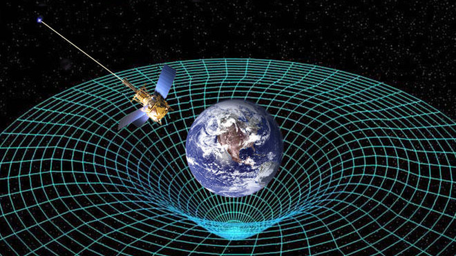

|
|
YERÇEKİMİ DÜNYA'NIN HER YERİNDE AYNI DEĞİLDİR. NEDEN? Yoğunluğu her noktada aynı olan küre şeklindeki bir yapının çevresine etki eden kütleçekim kuvveti sabittir. Ancak şekli tam küresel olmadığı için Dünya’nın kütleçekim alanı her yerde aynı değildir. Dünya’nın kendi etrafındaki dönüşü, şeklinde bazı düzensizliklere sebep olur. Dünya’nın Ekvator hizasındaki çapı kutuplardakinden yaklaşık 40 kilometre daha uzundur. İki cisim arasındaki kütleçekim kuvveti aralarındaki uzaklığın karesiyle ters orantılı olduğundan, kutuplardaki bir cisme etki eden kütleçekim kuvveti Ekvator’dakinden %0,66 daha fazladır. Dünya ile Ay arasındaki kütleçekim etkileşimi de Dünya’nın şeklinde düzensizliklere neden olur. Bunun yanı sıra yüzey şekilleri de Dünya’nın kütleçekim alanındaki değişimlerin nedenlerindendir. Örneğin Ekvator bölgesinde 5000 metre yüksekliğindeki bir dağın zirvesinde bulunan bir insanın ağırlığı, deniz seviyesindeki ağırlığından daha düşüktür. Son yıllarda yapılan araştırmalar buzullardaki erimenin, okyanus tabanının hareketli yapısının Dünya’nın kütleçekim alanını etkilediğini gösteriyor. Kayaçların yoğunluğu da Dünya’nın kütleçekim alanında düzensizliklere neden olur. Çoğunlukla kayaçların yoğunluğu 2-4 g/cm3 arasında değişir yani 1 cm3 kayacın kütlesi 2-4 gram aralığında olabilir. Yoğunluğu düşük tortul kayaçlardan oluşan bölgelerdeki kütleçekim kuvveti, yoğunluğu yüksek kayaçlardan oluşan bölgelere göre daha düşüktür. |
||
| © 2017 nekibu - Designed by Osman Koç |

|